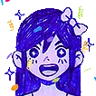

OMORI WIKI
Boa parte do conteúdo de texto ou imagens foram retiradas da WIKI de fãs de OMORI.
Se você gostar daqui, visite lá para mais detalhes em relação a história do jogo!
CLIQUE AQUI
ARMAS
As ARMAS são itens que são equipáveis na guia EQUIP e aumentam as estatísticas para um personagem específico.
A menos que estejam usando encantos específicos que aumentam a classificação, é impossível acertar qualquer alvo sem o uso de armas. Cada personagem empunha armas exclusivas para eles, facas para OMORI, brinquedos para AUBREY, bolas para KEL, utensílios de cozinha para HERO.
MUNDO IMAGINÁRIO
| Arma | Nome | Coração  |
Suco  |
ATK | DEF | VEL | Sorte | Hit | Utilizador | Informação |
|---|---|---|---|---|---|---|---|---|---|---|

|
FACA BRILHANTE | 0 | 0 | +5 | 0 | 0 | 0 | 100 | OMORI | Uma faca nova e brilhante. Você pode ver seu reflexo na lâmina. |

|
FACA | 0 | 0 | +7 | 0 | +2 | 0 | 100 | OMORI | Uma faca bem afiada. Já foi usado algumas vezes. |

|
FACA MAÇNATE | 0 | 0 | +9 | 0 | +4 | +2 | 100 | OMORI | Desgastado e mais difícil de usar. Você não pode mais ver seu reflexo. |

|
FACA ENFERRUJADA | 0 | 0 | +11 | +2 | +6 | +4 | 100 | OMORI | Ficando um pouco marrom. Não é mais o que costumava ser. |
|
|
FACA VERMELHA | 0 | 0 | +13 | +6 | +6 | +6 | 100 | OMORI | Uma faca nova e brilhante. Você pode ver algo na lâmina. |

|
BRINQUEDO RECHEADO | 0 | 0 | +4 | 0 | 0 | 0 | 100 | AUBREY | "Sr. Berinjela". Faz um barulho estranho quando você soca. |

|
MARTELO DE COMETA | 0 | 0 | +6 | 0 | 0 | +2 | 100 | AUBREY | Um martelo feito de meteoros! Que sorte encontrar! |

|
TRAVESSEIRO CORPORAL | +10 | 0 | +8 | 0 | 0 | 0 | 100 | AUBREY | Em tamanho real e abraços, mas desconfiados. |

|
CAIXA DE CORREIO | 0 | 0 | +12 | 0 | 0 | 0 | 100 | AUBREY | Você tem uma caixa... de correio |

|
BUSTO DE SWEET HEART | 0 | 0 | +20 | 0 | -30 | 0 | 75 | AUBREY | Um busto de SWEET HEART. É muito pesado. Muito, muito pesado. |

|
MACARRÃO DE PISCINA | 0 | 0 | -5 | -5 | -5 | -5 | 100 | AUBREY | É completamente inútil. Quem inventou isso, afinal? |

|
MACARRÃO LEGAL | 0 | 0 | +15 | 0 | 0 | 0 | 100 | AUBREY | É um macarrão de piscina. Mas mais legal. |

|
BASTÃO DE BEISEBOL | +10 | 0 | +20 | 0 | +10 | +10 | 100 | AUBREY | A arma final de AUBREY. |

|
BOLA DE BORRACHA | 0 | 0 | +3 | 0 | 0 | 0 | 100 | KEL | Testado no playground, aprovado para crianças. |

|
BOLA DE METEORO | 0 | 0 | +4 | 0 | 0 | +2 | 100 | KEL | Literalmente um meteoro! Quais são as chances? |

|
LARANJA DA CHINA | 0 | +30 | +6 | 0 | 0 | 0 | 100 | KEL | Uma laranja vermelha. |

|
VALETE | 0 | 0 | +12 | -6 | 0 | -6 | 100 | KEL | "Por favor, me chame de Jack. Lanterna é o nome do meu pai." - Jack |

|
BOLA DE PRAIA | 0 | 0 | +10 | 0 | +25 | 0 | 100 | KEL | Diversão ao sol para todos! |

|
COCO | 0 | +50 | +8 | 0 | 0 | 0 | 100 | KEL | Marrom, peludo e cheio de SUCO. |

|
GLOBO | 0 | 0 | +10 | 0 | 0 | 0 | 1000 | KEL | A TERRA, mas menor. É um pouco difícil driblar. |

|
BOLA DE NEVE | 0 | 0 | +13 | 0 | 0 | 0 | 1000 | KEL | É gelada porquê é feita de neve. |

|
BOLA DE FRANGO | 0 | 0 | 0 | 0 | +200 | 0 | 100 | KEL | UMA BOLA DE GALINHA. O que mais seria? |

|
BOLA DE BASQUETE | 0 | +50 | +10 | 0 | +100 | +15 | 100 | KEL | A arma final do KEL. |

|
ESPÁTULA | 0 | 0 | +4 | 0 | 0 | 0 | 100 | HERO | Bom para virar hambúrgueres. |

|
BULE | 0 | +30 | +6 | 0 | 0 | 0 | 100 | HERO | Equipada com uma alça e bico. |

|
FRIGIDEIRA | +30 | 0 | +7 | 0 | 0 | 0 | 100 | HERO | Menos eficaz que um micro-ondas. Lanches restaurarão mais corações durante batalhas. |

|
LIQUIDIFCADOR | 0 | +30 | +7 | 0 | 0 | 0 | 100 | HERO | Transforma qualquer sólido em líquido. Lanches restaurarão mais SUCO durante batalhas. |

|
SHUCKER | 0 | 0 | +10 | 0 | 0 | 0 | 100 | HERO | Bom para abrir MESSELS. |

|
ESPADA LOL | 0 | +10 | +14 | 0 | 0 | 0 | 100 | HERO | xD |

|
MARTELO | 0 | 0 | +30 | 0 | 0 | 0 | 100 | HERO | A ferramenta mais perigosa da cozinha. |

|
ESPÁTULA CONFIÁVEL | +20 | +20 | +20 | 0 | 0 | 0 | 100 | HERO | A arma final de HERO. Lanches restaurarão mais corações e suco durante batalhas. |
MUNDO REAL
| Arma | Nome | Coração |
Suco |
ATK | DEF | VEL | Sorte | Hit | Utilizador | Informação |
|---|---|---|---|---|---|---|---|---|---|---|

|
MÃOS | 0 | 0 | +2 | 0 | 0 | 0 | 95 | SUNNY | Isso é tudo que você tem. |
|
|
FACA | 0 | 0 | +30 | 0 | 0 | 0 | 25 | SUNNY | Bom para cortar carne. |

|
VIOLINO DESTRUÍDO | 0 | 0 | +1 | 0 | 0 | 0 | 1000 | SUNNY | Não pode ser tocado. |

|
VIOLINO QUEBRADO | 0 | 0 | +8 | 0 | 0 | 0 | 1000 | SUNNY | Isso é tudo que você tem. |

|
VIOLINO | 0 | 0 | +14 | 0 | 0 | 0 | 1000 | SUNNY | Não pode ser destruído. |

|
RAQUETE PARA MOSCAS | 0 | 0 | +1 | 0 | 0 | 0 | 1000 | SUNNY | Bem-vindos à equipe da SWAT. |
|
|
BOLA DE BASQUETE | 0 | 0 | +2 | 0 | 0 | 0 | 95 | KEL | A arma escolhida pelo KEL. Surpreendentemente eficaz. |

|
BASTÃO DE PREGOS | 0 | 0 | +3 | 0 | 0 | 0 | 95 | AUBREY | A arma escolhida por AUBREY. Mais perigoso que uma faca de carne. |

|
PUNHO | 0 | 0 | +1 | 0 | 0 | 0 | 95 | HERO | Faz o trabalho. |